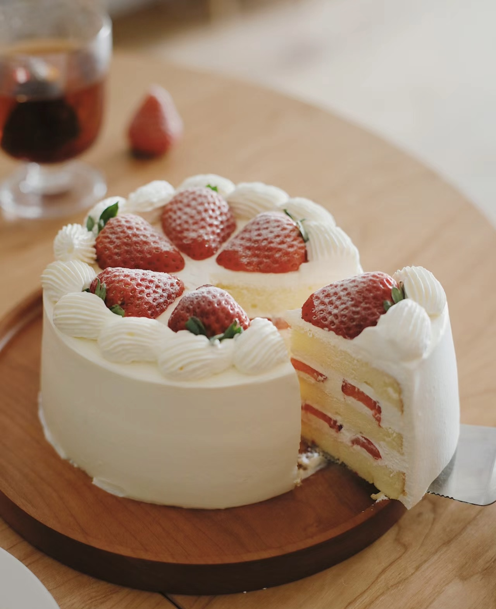

Delicious Strawberry Cake Recipe
Fresh, fruity, and perfect for any occasion!
Ingredients

- 2 cups all-purpose flour
- 1 1/2 teaspoons baking powder
- 1/4 teaspoon salt
- 1/2 cup unsalted butter, softened
- 1 1/2 cups sugar
- 2 large eggs
- 2 teaspoons vanilla extract
- 1/2 cup whole milk
- 1 1/2 cups fresh strawberries, chopped
- Optional: Whipped cream for serving
Instructions
- Preheat the oven to 350°F (175°C). Grease and flour two 8-inch round cake pans.
- In a medium bowl, whisk together the flour, baking powder, and salt.
- In a large bowl, cream the butter and sugar until light and fluffy. Beat in the eggs one at a time, then stir in the vanilla extract.
- Gradually add the flour mixture to the wet ingredients, alternating with the milk, beginning and ending with the flour mixture. Mix until just combined.
- Gently fold in the chopped strawberries.
- Divide the batter evenly between the two prepared pans. Bake for 25-30 minutes, or until a toothpick inserted into the center comes out clean.
- Let the cakes cool in the pans for 10 minutes, then remove from the pans and transfer to a wire rack to cool completely.
- Serve with whipped cream or frost as desired.